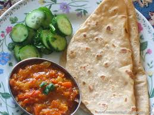
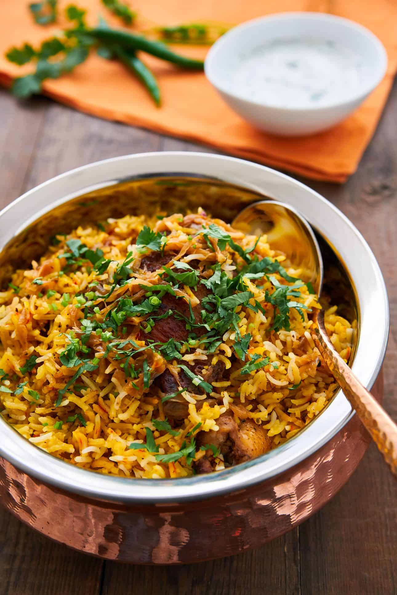

| food item |
ingredients |
type |
protein |
calories |
|
milk,tea power,ginger |
vegetarian |
12 |
250 |
|  |
flour,aloo,tomato |
vegetarian |
20 |
300 |
|  |
chicken,rice,cerals |
non-vegitarian |
20 |
300 |
making tea
- Fill up the kettle with water.
- Boil the kettle.
- Place a teabag in your favourite mug.
- Pour boiling water into your favourite mug.
- Brew the tea for a few moments.
- Remove and dispose of the teabag.
- Add milk.
- Add sugar.
making paratha and aloo curry
- add 2 cups whole wheat flour,1\4 teaspoon salt
- roll out the dough and cook on a hot griddle with oil or ghee
- for aloo curry saute onions,tomatoes,and spices in a pan
- add boiled potatoes and cook until the curry thicknnes
mmaking biryani
- Heat oil in a pan over medium heat...
- cook basmati rice until its 70% done
- layer the maginated meat/vegetables and rice in a pot.
- cook on low heat until fully cooked